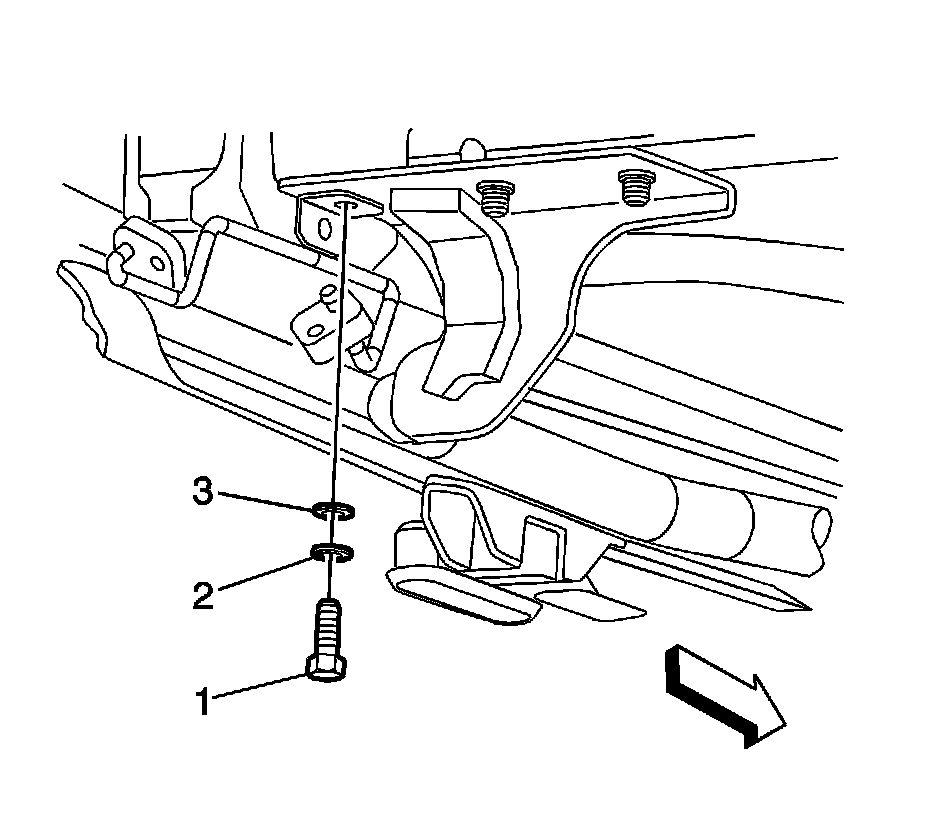
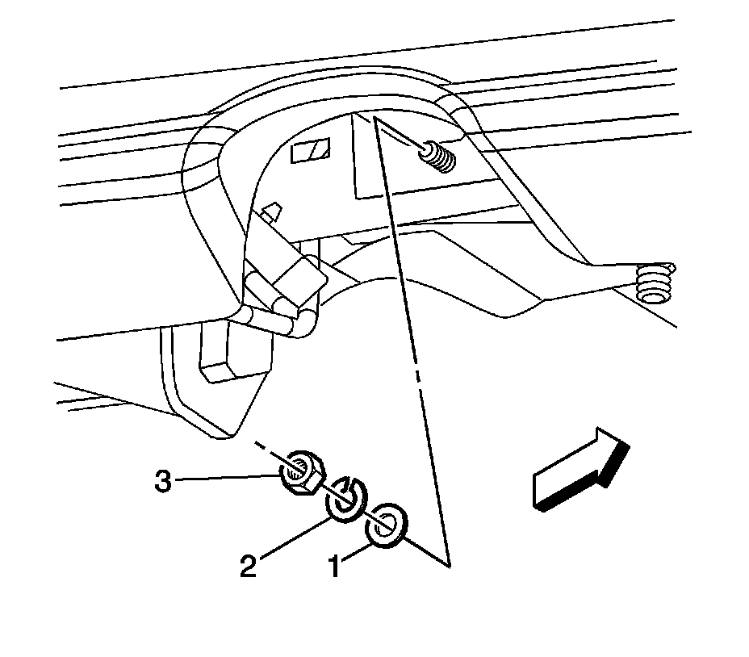
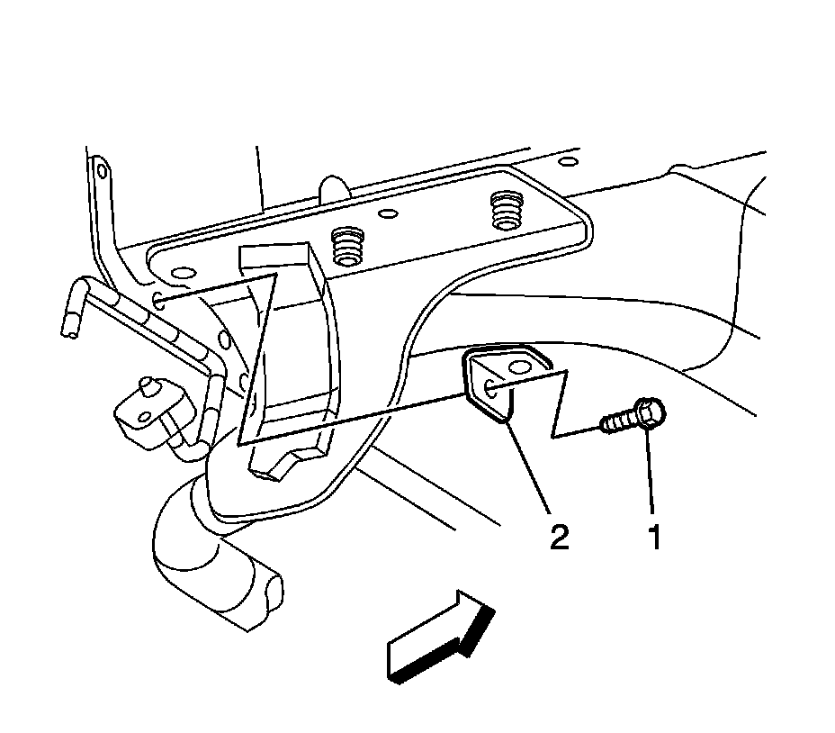
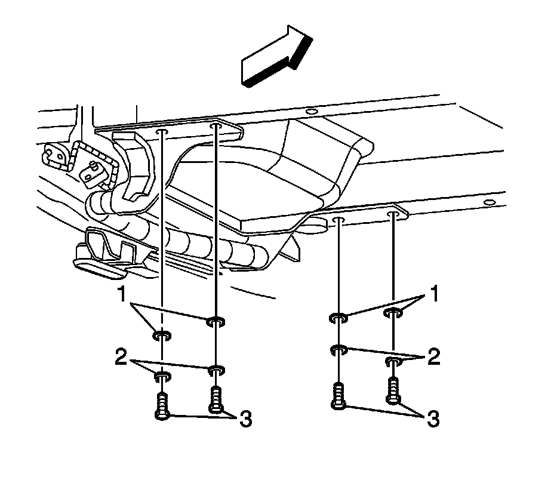
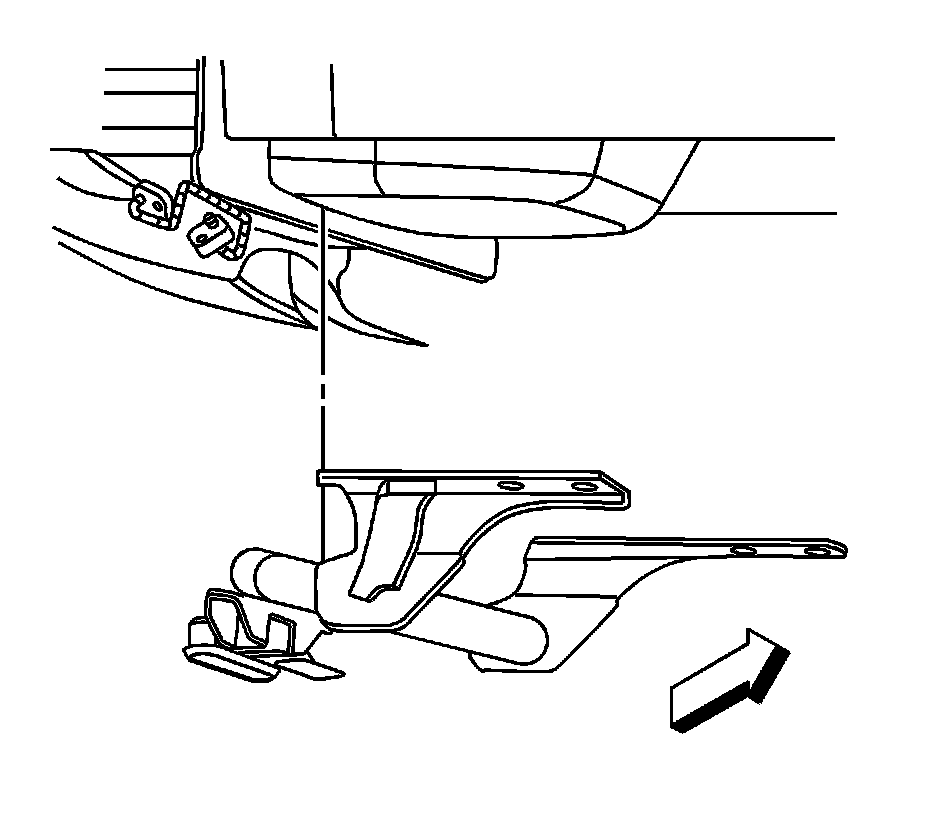

Trailer Hitch: Service and Repair
Trailer Hitch Replacement
Removal Procedure
1.Raise and support the vehicle. Refer to Lifting and Jacking the Vehicle .
2.Remove the spare tire.
3.Remove the rear fascia. Refer to Rear Bumper Fascia Replacement Rear Bumper Fascia Replacement .
4.Lower the exhaust system from the rear hangers and support.
5.Remove the automatic level control compressor with bracket. Refer to Air Compressor Replacement .
6.Support the trailer hitch with a suitable jack.

7.Remove the sill bracket socket head screws (1), lock washers (2), and flat washers (3).

1.Remove the sill bracket nuts (3), lock washers (2), and flat washers (1).

1.Remove the sill bracket bolt (1) and sill brackets (2).

1.Remove the trailer hitch mounting bolts (3), lock washers (2), and flat washers (1).

1.Remove the trailer hitch from the vehicle.
Installation Procedure
1.Position the trailer hitch to the vehicle using a jack to maintain the position.
Notice:Refer to Fastener Notice .
1.Install the trailer hitch mounting bolts (3), lock washers (2), and flat washers (1).
TightenTighten the bolts to 95 N �m (70 lb ft).
1.Install the sill bracket bolts (1) and sill brackets (2).
1.Install the sill bracket nuts (3), lock washers (2), and flat washers (1).
TightenTighten the nuts to 25 N �m (18 lb ft).
1.Install the sill bracket socket head screws (1), lock washers (2), and flat washers (3).
TightenTighten the bolts to 95 N �m (70 lb ft).
2.Install the automatic level control compressor with bracket. Refer to Air Compressor Replacement .
3.Install the exhaust system the rear hangers.
4.On vehicles without a previously installed trailer hitch, carefully remove the perforated section for the trailer hitch from the rear fascia.
5.Install the rear fascia. Refer to Rear Bumper Fascia Replacement Rear Bumper Fascia Replacement .
6.Install the spare tire.
7.Lower the vehicle.